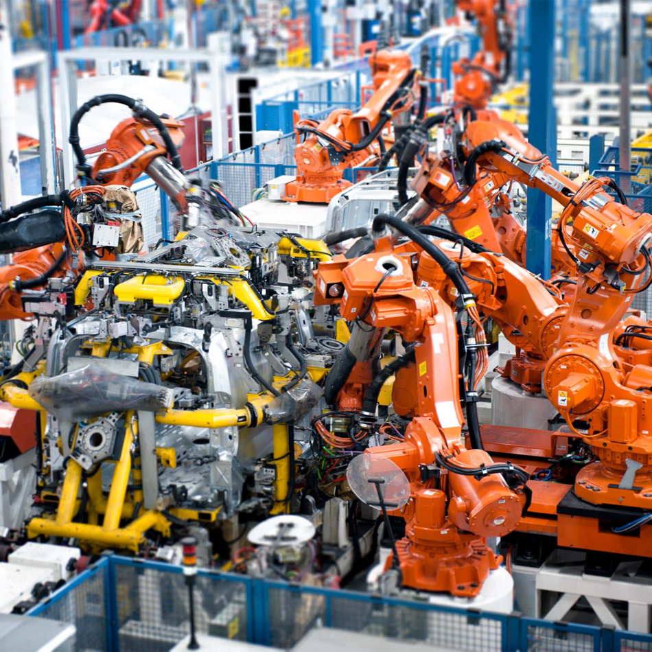
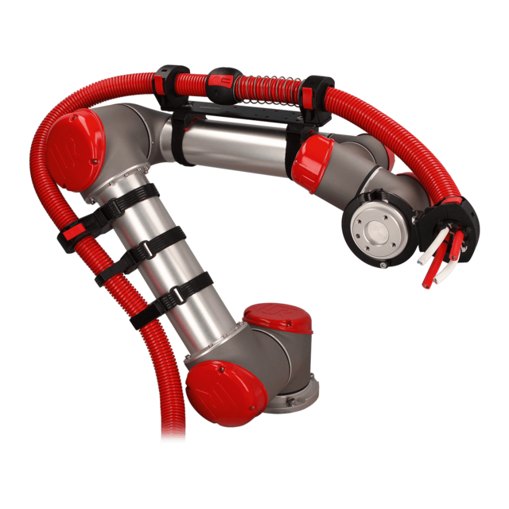
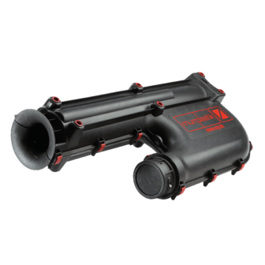
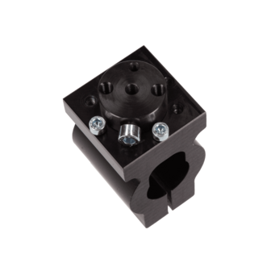
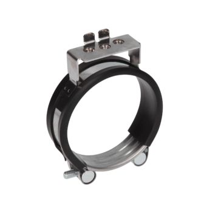
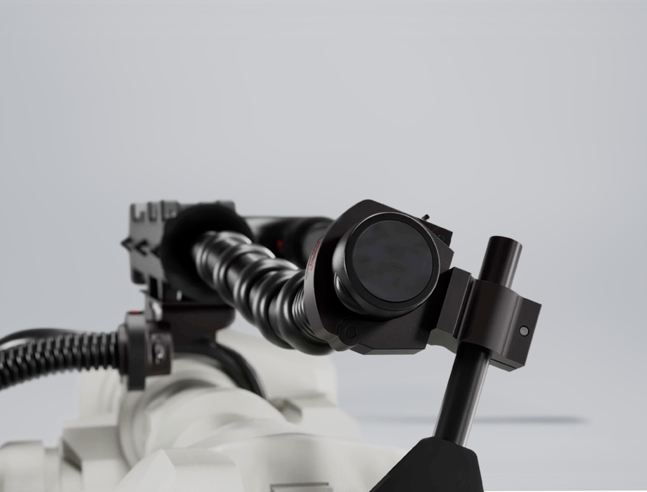

Giải pháp tối ưu định tuyến cáp, cố định ống dẫn trên các cánh tay robot công nghiệp chuyển động đa trục phức tạp.
Dòng sản phẩm AUR là trái tim trong hệ thống tự động hóa nhà máy, đặc biệt ở các khu vực robot hàn, robot gắp thả (pick & place), robot sơn ô tô. Việc sử dụng phụ kiện chuyên dụng giúp loại bỏ hoàn toàn các lỗi đứt ngầm dây tín hiệu, giảm thời gian chết (downtime) của dây chuyền.

Ứng dụng Robot trong sản xuất ô tô
Hệ thống gá đỡ linh hoạt FHS
Hệ thống R-Tec Box
Phụ kiện dòng R-FKD
Giá đỡ dòng SHS
Cấu hình Dresspack cho Robot